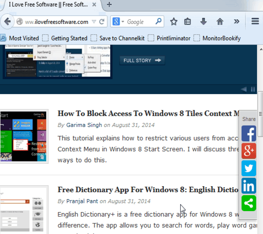

Як створювати гіперпосилання?
Для створення гіперпосиланнь на інші сторінки використовують тег <a>.
Уявімо, що ми робимо сайт піцерії, і на головній у нас є текст:
На цьому сайті ви можете ознайомитись з нашим меню
Чому б не зробити тут гіперпосилання на сторінку з меню? Давайте зробимо гіперпосиланням
слово меню, щоб відвідувач розумів, на яку сторінку він перейде.
Для цього давайте створимо сторінку index.html в блокноті. Пишемо там це речення, та беремо меню у тег <a>. Тепер ваше речення має виглядати так: На цьому сайті ви можете ознайомитись з нашим <a>меню</a>
Чудово! Тепер відкриємо у браузері. Тепер наше речення має виглядати так:
На цьому сайті ви можете ознайомитись з нашим меню
А й справді, це ще не гіперпосилання, адже ми забули дуже важливий атрибут,
який вказує куди по цьому посилання ми перейдемо. Цей атрибут називається
href, а адреcа на яку ми перейдемо вказується так:
href="адреса".
Тож відкриваємо блокнот і
дописуємо у <a> атрибут href з адресою на
сторінку menu.html, наприклад.
Тепер код має виглядати ось так: На цьому сайті ви можете ознайомитись з нашим <a href="menu.html">меню</a>
Перезавантажуємо сторінку у браузері і маємо На цьому сайті ви можете ознайомитись з нашим меню
Це гіперпосилання вас, звичайно, нікуди не приведе (Точніше приведе на сторінку "Файл не знайдено"), але
не хвилюйтесь, це лише тому, що в нас нема сторінки під назвою menu.html
.
Тож перше завдання:
Створіть HTML сторінку під назвою menu.html (обов'язково в одній папці з index.html, з яким ми щойно працювали) та створіть на ній гіперпосилання на index.html
Додаткові атрибути
title
Отже, ми навчилися створювати гіперпосилання на інші сторінки за допомогою тега <a> та атрибуту href. Але це далеко не все, що можна робити з гіперпосиланнями. Як щодо створення спливаючої підказки при наведенні курсору на гіперпосилання?
Для створення спливаючої підказки використовують атрибут title. Повний вигляд: title="Текст вспливаючої підказки"
На цьому сайті ви можете ознайомитись з нашим <a href="menu.html" title="Детальше про меню">меню</a>
Ось як це має виглядати (наведіть вказівник миші на гіперпосилання щоб побачити спливаючу підказку):
На цьому сайті ви можете ознайомитись з нашим меню
<a href="menu.html" title="Детальше про меню">меню</a> - правильно
<a title="Детальше про меню" href="menu.html">меню</a> - правильно
<a href="menu.html", title="Детальше про меню">меню</a> - неправильно
target
Перейдіть за посиланням, яке ми створювали на початку уроку. Зверніть увагу, чи з'являється нове вікно, і
ви помітите, що сторінка відкривається у тому ж вікні, що й минула.
Але це не завжди зручно. Наприклад, коли ми купуємо щось в інтернеті, часто потрібно заповнювати
форми, але може виникнути потреба повернутися до сторінки з товарами. Якщо форма для замовлення
відкривається у тому ж вікні що й товари, то при поверненні на минулу сторінку доведеться заповнювати
форму спочатку. Тож краще було б, якби сторінка з формою відкривалася у новому вікні.
Як це зробити ми зараз розповімо.
Атрибут target відповідає за відкривання сторінки у певній вкладці (у тій же або новій).
Є 3 значення target: "_blank", "_self" і "довільне ім'я"
target="_self" стоїть по замовчуванню. Він відкриває сторінку у тому ж вікні, де було гіперпосилання на неї.
Якщо ви хочете, щоб сторінка відкривалась у новому вікні, використовуйте target="_blank". Він створює нове вікно при кожному натисканні на гіперпосилання.
target="ім'я сторінки" також відкриває сторінку у новому вікні, але при наступному натисканні на гіперпосилання він не створює ще одне вікно як "_blank", а переносить нас на вже створене.
Давайте перевіримо на прикладі (Щоб переглянути принцип роботи target, пропонуємо робити гіперпосилання на порожню сторінку about:blank, але ви можете використовувати будь-яку іншу існуючу сторінку)
| "_self" | <a href="about:blank" target="_self">гіперпосилання</a> | гіперпосилання |
|---|---|---|
| "_blank" | <a href="about:blank" target="_blank">гіперпосилання</a> | гіперпосилання |
| "довільне ім'я" | <a href="about:blank" target="сторінка">гіперпосилання</a> | гіперпосилання |
Наступне завдання:
На сторінці index.html змініть гіперпосилання на сторінку menu.html так, щоб вона відкривалась у новій вкладці, але не створювала нове вікно при кожному натисканні на гіперпосилання. Зробіть вспливаючі підказки для гіперпосиланнь з коротким змістом сторінки, на яку веде посилання.
Гіперпосилання в межах сторінки
Ви вже навчилися створювати гіперпосилання на зовнішні сторінки. Але можна робити гіперпосилання і на
певний елемент тієї ж сторінки
Для цього потрібно надати елементу, на який веде гіперпосилання id (особливе ім'я, так звану
ідентидифікацію, що виділить елемент для легшого написання коду), і приписати його до назви сторінки у
адресі гіперпосилання.
А тепер детальніше:
1) id це ще один атрибут. Його повний вигляд: id="elements_name".
Детальніше id ми розглянемо у наступних уроках. Зараз ви маєте знати, що його можна присвоювати
будь-якому елементу.
Також важливо знати як можна і не можна називати елементи:
| Не можна | Можна |
|---|---|
| Кирилицею "основний" |
Латиницею "main", "osnovniy" |
| Починатись цифрою(ми), або складатись лише з неї(них) "1picture", "25" |
Містити цифри всередині або вкінці назви "article14", "from1to3" |
| Містити пробіли, коми та крапки "first img", "main.block", "bad,good" |
Містити знаки "-", "_" "first_img", "main-block" |
На index.html зробимо заголовок "Кінець сторінки" і дамо йому айді "end-title": <h1 id="end-title">Кінець сторінки</h1>
2) Щоб зробити гіперпосилання на елемент з певним id, треба в адресі гіперпосилання (href) після назви сторінки написати # та власне айді елементу
Заповніть сторінку будь-яким текстом або зображеннями, так щоб заголовок був у самому кінці сторінки, та
його не було видно без пролистування сторінки (Це потрібно для того, щоб переглянути як працюватиме
гіперпосилання). Тепер на початку сторінки зробимо гіперпосилання на цей заголовок.
Створюємо абзац із текстом "На кінець сторінки" та беремо цей текст в тег <а>. В адресі пишемо назву сторінки, на якій
знаходимось (тобто index.html), # та айді елементу, до якого веде гіперпосилання (в нашому випадку
end-title).
Адресу писати треба без пробілів!
Якщо ви все зробили правильно, у вас має вийти
<a href="index.html#end-title">На кінець сторінки</a>
Тепер натисніть на гіперпосилання і, якщо ви все правильно зробили, побачите, що ви з'явились у кінці сторінки.
Підсумуємо:
| Для створення гіперпосилання використовується тег <a> з атрибутом href | На цьому сайті ви можете ознайомитись з нашим <a href="menu.html">меню</a> |
| У тега <a> є додаткові атрибути, такі як | title i target |
| title створює спливаючу підказку | На цьому сайті ви можете ознайомитись з нашим <a href="menu.html" title="Детальше про меню">меню</a> |
| span class="blue">target відкриває сторінку у тому ж або новому вікні | <a href="about:blank" target="_self">гіперпосилання</a>
<a href="about:blank" target="_blank">гіперпосилання</a> <a href="about:blank" target="сторінка">гіперпосилання</a> |
| Можна створювати гіперпосилання не тільки на інші сторінки, але й на елементи тієї ж сторінки. | Для цього треба задати елементу айді, і вказати його у адресі гіперпосилання.
<h1 id="end-title">Кінець сторінки</h1> <a href="index.html#end-title">На кінець сторінки</a> |